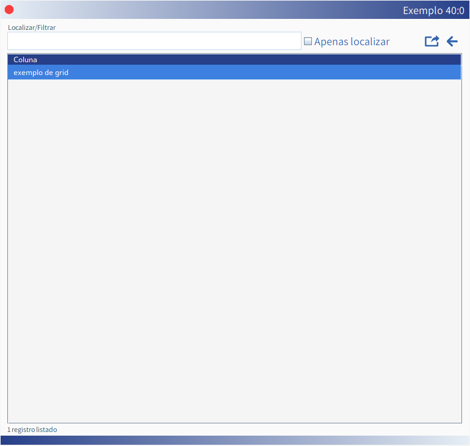
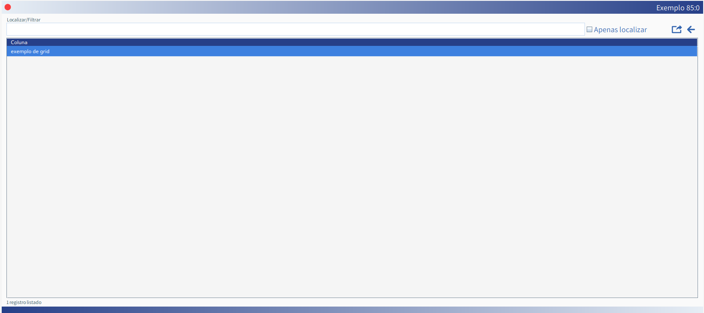

[DIM]
Esta tag define a área útil da tela a ser utilizada pelo MKQ (além de definir o comportamento do grid da tabela de dados).
É opcional e pode receber SETE parâmetros separados por dois pontos.
Sintaxe
75 : 0 : 0 : 25 : 70 : 15 : 100
Detalhe
-
1. Define o percentual da largura da tela que deverá ser utilizado pelo formulário de grid
(nossa sugestão é 98);
-
2. O segundo parâmetro indica se a largura das colunas serão proporcionalizadas nesta
tela ou se deverão ser fixas com aplicação de barra de rolagem horizontal, se necessário.
Quando este valor for 0 as colunas serão proporcionalizadas.
Quando este valor for maior que 0 (normalmente 15) a largura das colunas será resultante
da multiplicação da largura definida nos labels do [SQL] por este fator informado e uma
barra de rolagem horizontal poderá ser apresentada (se necessário);
-
3. O terceiro parâmetro só é considerado se o segundo parâmetro for diferente de zero.
Este parâmetro indica o número de colunas a fixar na lateral esquerda.
Colunas ocultas (com dimensão ZERO) também devem ser contadas;
-
4. Este parâmetro define, opcionalmente, a altura das linhas do grid. O default é 25.
A alteração da altura pode ser útil quando há necessidade de apresentar imagens como
informação resultante do [SQL];
-
5. Define, opcionalmente, o percentual da altura da tela que deverá ser utilizado pelo formulário do grid.
Se for menor do que 70 (padrão) a tela será centralizada verticalmente;
-
6. Define, opcionalmente, a espessura a ser aplicada em caso de barras de rolagem no grid
de dados. Se não for informado, assume 15 (padrão).
-
7. Define, opcionalmente, o fator de redimensionamento dos elementos na tela (120, por
exemplo, aumentará em 20%).
Exemplo de grids com diferentes dimensões

